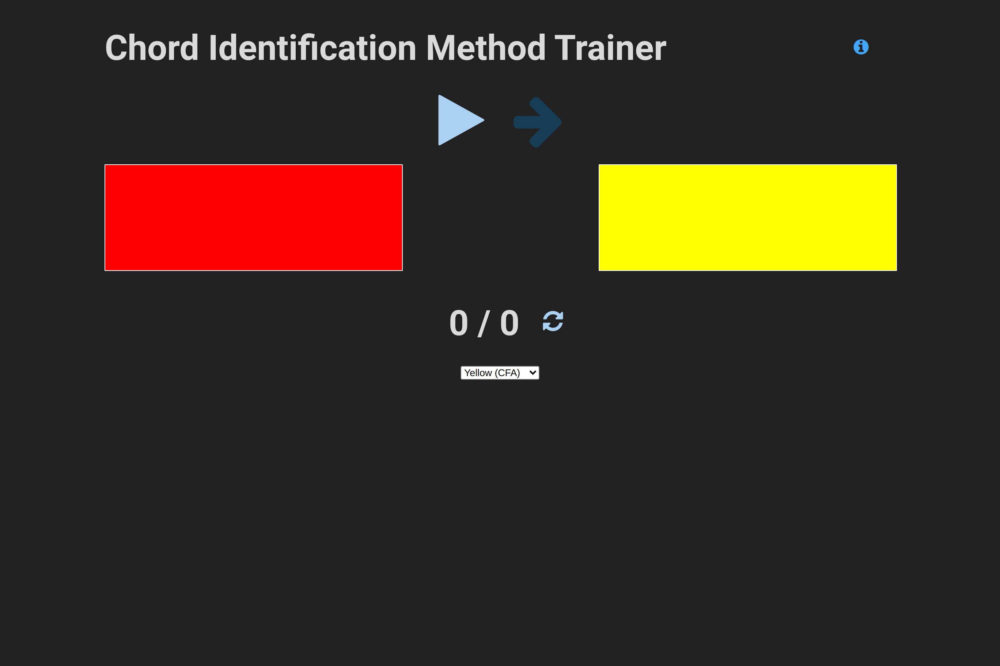
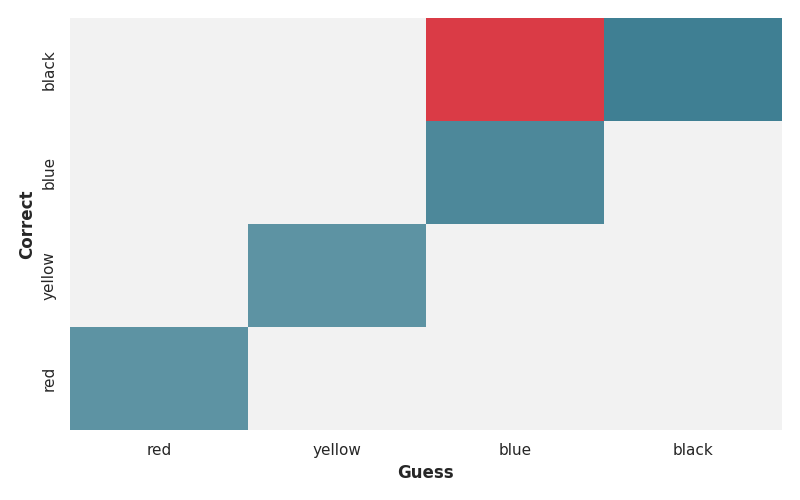
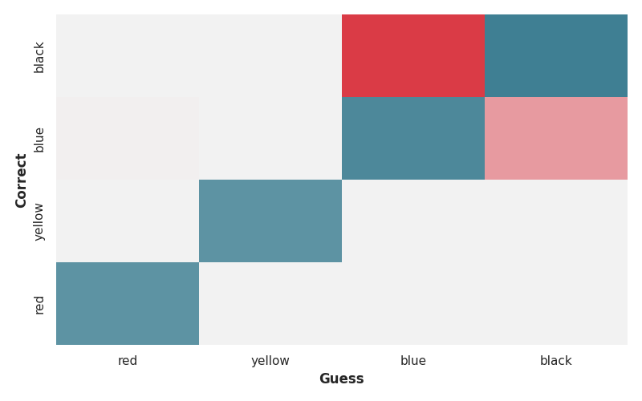
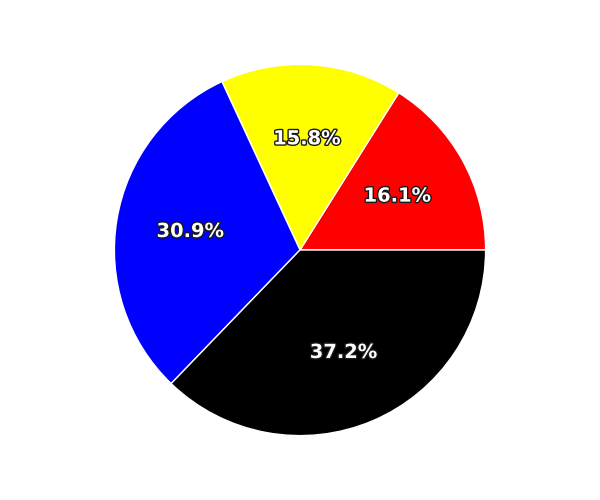
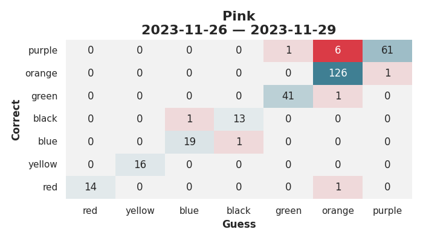

<h1 style="font-size: 3em">Using a Progressive Web App to Teach My Son Absolute Pitch</h1> <br/> <br/> <br/> <span style="font-size: 2.5em"> Paul Ganssle </span> <br/> <br/> <img src="images/pganssle-logos.svg" height="40px" alt="@pganssle"> <br/> <br/> <span style="font-size: 1em;"><em>This talk on Github: <a href="URL">pganssle-talks/2024-nerd-summit-chord-trainer</a></em> </span> <br/> <a rel="license" href="https://creativecommons.org/publicdomain/zero/1.0/"> <img src="external-images/logos/cc-zero.svg" height="45px"> </a> <br/> Notes: This is where speaker notes go.
# Relative and Absolute Pitch <div class="gallery two-high"> <div class="gallery-item"> </div> <div class="gallery-item"> </div> </div> Notes: To put everyone on the same page, most people have what's called relative pitch — you can tell if one sound is higher or lower than another sound, but you cannot hear a sound and say, "Oh, that's a middle C" without a known reference pitch — that is why, for example, the stereotypical barbershop quartet will have someone blowing into a pitch pipe before they start singing — they know what note that's supposed to be, and they know where they should be singing relative to it. In contrast, absolute pitch (also sometimes called perfect pitch), is when you can identify notes without the need of a reference pitch. In some ways I've heard this described as perceiving sound more like the way most of us perceive color — you can look at a color and know that it's red or yellow or blue or something, you don't need to compare objects to swatches to determine how red or blue they are, you just look at it and know what color it is. -- # Teaching Absolute Pitch to Children <!-- alt="A screenshot of the abstract of a paper in Psychology of Music from 2012. The title is: A longitudinal study of the process of acquiring absolute pitch: A practical report of training with the ‘chord identification method’ The author is Ayako Sakakibara from the Ichionkai Music School, Tokyo, Japan The abstract is: The purpose of this study was to investigate longitudinally the process of acquiring absolute pitch (AP). Twenty-four young children (aged 2 to 6 years) without AP were trained to acquire AP using Eguchi’s (1991) Chord Identification Method (CIM). All children were able to acquire AP (except two who ceased training). Results suggest that, at a minimum, children younger than 6 years old are capable of acquiring AP through intentional training. Furthermore, children’s errors observed during training suggested the transition of different strategies relying respectively on tone height and tone chroma. Initially, children identified chords using a strategy depending primarily on tone height, then gradually they began to attend to tone chroma to identify chords and this process ultimately led to acquisition of AP."> --> Notes: I knew about perfect pitch and thought it might be cool to have, but I had always been under the impression that it was not something you could learn — either your brain processes sound this way or it doesn't. But then I came across a paper from 2012 purporting that it is easier to learn perfect pitch in childhood, with enough training. It comes from a music school in Japan called the Ichionkai Music School. They claim to have a 90% success rate using their method to train children between ages 2 and 6, and conveniently they lay out the method in the paper. -- ## Reasons for Skepticism - Baseline credence for psychology research should be extremely low - Study was performed by the Ichionkai Music School - The dropout rate was ridiculously low for this method <br/> <br/> <div class="fragment disappearing-fragment nospace-fragment fade-out" data-fragment-index="0"> <img src="images/replication_crisis_wikipedia_ss.png"> </div> <div class="fragment disappearing-fragment nospace-fragment fade-in-and-out" data-fragment-index="0"> <blockquote style="border: 1px solid black"> <b>Twenty-two participants out of 24</b> were able to conduct the amount of daily practice needed for the chord identification method, 4–5 sessions a day, almost every day throughout the period of the training. Two participants stopped the training for personal reasons unrelated to the current project. <b>The remaining 22 participants who continued the training were able to acquire AP.</b> </blockquote> </div> <div class="fragment appear" style="margin-top:2em" data-fragment-index="1"> ## Reasons to Try Anyway - Probably no one is really trying to teach kids perfect pitch - Critical period effects are probably real - Total time commitment isn't high (though distributed in an annoying way) - ~75-150 hours over 1-2 years - It can be a bonding experience </div> Notes: - The study was performed by someone whose affiliation was "Ichionkai Music School". I cannot find anything else published by this person except another article about perfect pitch in which their affiliation is also the Ichionkai Music school. This shouldn't immediately disqualify them, but assuming they actually work for the school, it seems very unlikely that they would be publishing studies that do not match their assertions. - One thing that is very fishy about the study to me is that in the paper they say that they recruited 24 students and told the parents that they could stop at any time, then taught them the method and followed their progress. They claim that 2 students dropped out, and the remaining 22 *all* acquired absolute pitch. - This method, as you will soon see, involves quizzing 2-6 year olds *five times a day* for *several years*. I built an app implementing this method and my son is unusually conscientious about these sorts of things and I had a lot of trouble getting him to do it even 4 times a day. I gave this app to many people — including musicians who want to foster an interest in music in their children — and as far as I know no one I've sent it to has made a regular habit of using it. It strains my credibility to think that there is not some sort of huge selection effect in play, unless Japanese culture and patterns of life are very different with regards to deliberate and regimented practice in very young children.
# Eguchi's Method: Basics <figure> <img src="external-images/eguchi-book-cover-upscale.png" class="screenshot splash" alt="Cover of a book featuring a lamp and a metronome. The text is all in Japanese, and reads (from right to left): ピアノレッスンを変える (3) (Side) 新·絶対音感プログラ (Title) 才能は身につけられる (Text in red) 江口寿子 · 江口彩子 — 共著 (Authors) "/> <figcaption><i>New Absolute Pitch Program by Hisako Eguchi and Ayako Eguchi</i></figcaption> </caption> -- # Eguchi's Method <ul> <li>Chords associated with colored flags</li> <li class="fragment fade-in" data-fragment-index="0">Child must be able to identify each chord with 100% accuracy</li> <li class="fragment fade-in" data-fragment-index="1">New chords are introduced every 2 weeks</li> <li class="fragment fade-in" data-fragment-index="2">Do 25 identifications per session, <u>5 sessions per day</u></li> <li class="fragment fade-in" data-fragment-index="4">When all chords are learned, scale back sessions to maintain 100% accuracy, continue until aged 9</li> -- <style> table.chord-chart td { text-align: center; } td.keyboard img { width: 20dvw; } td.chord-notes { width: 7.5dvw; text-align:center; } td.chord-color { width: 5 dvw; } td.chord-name { width: 7.5 dvw; } td.left-border { border-left: 1px solid black; } </style> # White Chords <br/> <table class="chord-chart"> <tr> <td class="chord-notes fragment custom outline" data-fragment-index="0">C E G</td> <td class="chord-color">Red</td> <td class="chord-name">C</td> <td class="keyboard"> <img src="images/color_keyboard/red.svg"> </td> <td class="chord-notes left-border">C F A</td> <td class="chord-color">Yellow</td> <td class="chord-name">F/C</td> <td class="keyboard"> <img src="images/color_keyboard/yellow.svg"> </td> </tr> <tr> <td class="chord-notes">B D G</td> <td class="chord-color">Blue</td> <td class="chord-name">G/B</td> <td class="keyboard"> </td> <td class="chord-notes left-border">A C F</td> <td class="chord-color">Black</td> <td class="chord-name">F/A</td> <td class="keyboard"> </td> </tr> <tr> <td class="chord-notes">D G B</td> <td class="chord-color">Green</td> <td class="chord-name">G/D</td> <td class="keyboard"> <img src="images/color_keyboard/green.svg"> </td> <td class="chord-notes left-border fragment custom outline" data-fragment-index="0">E G C</td> <td class="chord-color">Orange</td> <td class="chord-name">C/E</td> <td class="keyboard"> <img src="images/color_keyboard/orange.svg"> </td> </tr> <tr> <td class="chord-notes">F A C</td> <td class="chord-color">Purple</td> <td class="chord-name">F</td> <td class="keyboard"> <img src="images/color_keyboard/purple.svg"> </td> <td class="chord-notes left-border">G B D</td> <td class="chord-color">Pink</td> <td class="chord-name">G</td> <td class="keyboard"> <img src="images/color_keyboard/pink.svg"> </td> </tr> <tr colwidth="6"> <table class="chord-chart"> <tr> <td class="chord-notes fragment custom outline" data-fragment-index="0">G C E</td> <td class="chord-color">Brown</td> <td class="chord-name">C/G</td> <td class="keyboard"> </td> </tr> </table> </tr> </table> -- # Black Chords <br/> <table class="chord-chart"> <tr> <td class="chord-notes">A C♯ E</td> <td class="chord-color">Gray</td> <td class="chord-name">A</td> <td class="keyboard"> <img src="images/color_keyboard/gray.svg"> </td> <td colspan="3" rowspan="6" style="border:none; width:32.5dvw"> <ul> <li>Can test individual "white note" identification</li> <li class="fragment appear">Switch to calling out note names (C-E-G, A-C♯-E, etc)</li> <li class="fragment appear">Can introduce inversions if having trouble (C♯-E-A, F-D-B♭)</li> </ul> </td> </tr> <tr> <td class="chord-notes">D F♯ A</td> <td class="chord-color">Tan</td> <td class="chord-name">D</td> <td class="keyboard"> </td> <tr> <tr> <td class="chord-notes">E G♯ B</td> <td class="chord-color">Light Green</td> <td class="chord-name">E</td> <td class="keyboard"> </td> </tr> <tr> <td class="chord-notes">B♭ D F</td> <td class="chord-color">Light Purple</td> <td class="chord-name">B♭</td> <td class="keyboard"> <img src="images/color_keyboard/lightpurple.svg"> </td> </tr> <tr> <td class="chord-notes">E♭ G B♭</td> <td class="chord-color">Sky Blue</td> <td class="chord-name">E♭</td> <td class="keyboard"> <img src="images/color_keyboard/skyblue.svg"> </td> </tr> </table>
# Building an MVP ## Requirements: 1. Play the first few chords 2. Show colored flags ## Design constraints: 1. No login required 2. Easy to maintain and deploy 3. No backend 4. Cross-platform ## Approach: 1. Use an online keyboard to record audio files for the relevant chords 2. Build a static site with `jekyll` and host on GitHub Pages -- # First pass <div class="fragment disappearing-fragment fade-out" data-fragment-index="0">  </div> <div class="gallery two-wide two-high fragment fade-in" data-fragment-index="0" > <div class="gallery-item"> </div> <div class="gallery-item"> </div> <div class="gallery-item"> </div> <div class="gallery-item"> </div> </div> Notes: - Found an online piano website and used a loopback device to record the chords - Stored some information in `localStorage` to persist a session if the page is refreshed **Feedback:** - Needed a way to play chords manually - Son had basically no motivation to pay attention or get correct answers -- # Manual chord player -- # Need motivation? Bring in the cats <div class="fragment disappearing-fragment nospace-fragment fade-out" data-fragment-index="0"> <img src="images/v002-cat-faces.png" style="height: 75dvh" class="splash screenshot" alt="Screenshot of the application which now has a neutral cat emoji next to the progress numbers." /> </div> <div class="gallery two-high nospace-fragment fragment fade-in" data-fragment-index="0"> <div class="gallery-item"> </div> <div class="gallery-item"> <img src="images/v002-cat-eek.png" class="screenshot"/> </div> </div> -- # Need motivation? Bring in the cats <div class="gallery two-wide two-high"> <div class="gallery-item"> <img src="images/v002-cat-faces-0-happy.png" class="screenshot" /> </div> <div class="gallery-item"> <img src="images/v002-cat-faces-1-neutral.png" class="screenshot" /> </div> <div class="gallery-item"> <img src="images/v002-cat-faces-2-mad.png" class="screenshot" /> </div> <div class="gallery-item"> <img src="images/v002-cat-faces-3-sad.png" class="screenshot" /> </div> <div> -- # Color-coded Done Indicator -- # Demo
# Battle-testing the App Son was very distracted by zooming the app way in, so... <div class="fragment fade-in"> ```html <!-- Disable zoom --> <meta name="viewport" content="width=device-width, initial-scale=1.0, maximum-scale=1.0, user-scalable=0"> ``` </div> <br/> <div class="fragment fade-in"> ```javascript function is_ios() { return [ 'iPad Simulator', 'iPhone Simulator', 'iPod Simulator', 'iPad', 'iPhone', 'iPod' ].includes(navigator.platform) // iPad on iOS 13 detection || (navigator.userAgent.includes("Mac") && "ontouchend" in document) } // Disable zoom on iOS 10+ (normally I would be against this, but it's // causing usability problems) if (is_ios()) { document.addEventListener('gesturestart', function (e) { e.preventDefault(); }); } ``` </div> -- # Hacking the System <video controls autoplay muted class="fragment disappearing-fragment nospace-fragment fade-in-and-out" data-fragment-index="0"> <source src="videos/color_change_hack.webm" type="video/webm"> </video> <video controls autoplay muted class="fragment nospace-fragment fade-in" data-fragment-index="1"> <source src="videos/color_change_hack_fix.webm" type="video/webm"> </video> Notes: After a few months using the application, we got comfortable letting my son do practice by himself, and he was doing really well. Suspiciously well, in fact. I think the biggest clue was when he came out one day and had been able to get 100 right in a row, which was too big of a leap in ability. As it turns out, he was exploiting a bug that I knew about but hadn't fixed yet (because the app was designed to be run by the adult, and I didn't think he'd have such a hacker spirit at this age) — if you changed the level, it kept the stats the same, you had to manually reset the stats for each session. -- # Hacking the System: Part II <video controls autoplay muted class="fragment disappearing-fragment nospace-fragment fade-out" data-fragment-index="0"> <source src="videos/reset_hack.webm" type="video/webm"> </video> <img src="images/v003-session-history-viewer.png" class="splash screenshot nospace-fragment fragment fade-in" data-fragment-index="0" alt="A screenshot of the 'Session History Viewer', which shows the stats for each recent session."/> Notes:
# Profiles <div class="gallery two-wide"> <div class="gallery-item"> </div> <div class="gallery-item"> </div> </div> -- # Adaptive mode ### Random choice weights are adjusted based on the confusion matrix: `$$ c_i = \left(\Sigma_{k} M_{i,k}\right) \cdot \left(M_{i,i} + w_w\cdot\left(\Sigma_{k\neq i}M_{i,k}\right) + w_m\cdot\left(\Sigma_{k\neq i}M_{k,i}\right)\right) $$` <table> <tr> <td>$c_i$</td> <td>Chance of selecting color $i$</td> </tr> <tr> <td>$M_{i,k}$</td> <td>Number of times $i$ was selected when $k$ was the correct answer.</td> </tr> <tr> <td>$w_w$</td> <td>Weight associated with being wrong when presented with a given color</td> </tr> <tr> <td>$w_m$</td> <td>Weight associated with choosing a given color when presented with a different color</td> </tr> </table> <br/><br/> ### Constraints added and vector is normalized iteratively -- <table style="border: none"> <tr> <td style="border-bottom: none"></td> <td style="border-bottom: none"></td> </tr> <tr> <td>   </td> <td>  </td> </tr> </table>
# Black Chords Notes: -- <style> table.email { width: 60dvw; font-size: 0.8em; background-color: #f4f4f4; } table.email tr.body { font-size: 1.2em; } table.email tr.body td { padding-top: 1em; } table.email tr.recipient th, table.email tr.recipient td { border: none; } table.email tr th { width: 10%; } table.email tr th { font-weight: bold; } </style> <table class="email"> <tr> </tr> <tr class="recipient"> <th>To</th> <td>paul@...</td> </tr> <tr class="subject"> <th>Subject</th> <td>Chord Identification Method project</td> </tr> <tr class="body"> <td colspan="2"> Hello Paul,<br/> I am writing as a big fan of your Chord Identification Method project -- forgive the long email. As some background, I had been using the Eguchi method with my 5 year old daughter for <span class="fragment disappearing-fragment fade-out" data-fragment-index="0">\~8 months</span><span class="fragment nospace-fragment appear" style="text-decoration:underline; text-decoration-color: red; text-decoration-thickness: 3px; font-weight:bold;" data-fragment-index="0">~8 months</span> alternating between the keyboard and a crude app I built using a soundboard builder app (screenshot attached). I was considering building a commercial version and had mocked up some (probably too) complex wireframes with some gaming elements, when I stumbled on your project. You mentioned somewhere that you were "no UX guy," but as a product manager, I was really impressed by how you stripped the UX down to the perfect set of critical components including the emoji cat reactions. </td> </tr> </table> <br/> <div class="fragment appear" data-fragment-index="0" style="font-size: 3rem; font-weight: bold">Project was only 4 months old at the time!</div> -- # Black Chord Implementation <div style="height: 15dvh"> <ul> <li>Notes are called out by name, but the names don't matter</li> <li class="fragment appear" data-fragment-index="0">Colors are assigned to the black chords, <i>but only the main sequence ones</i></li> </ul> </div> -- <style> table.black-chord-colors td.color-bg { width: 12dvw; } table.black-chord-colors tr { height: 12dvh; } table.black-chord-colors th { text-align: center; } table.black-chord-colors td { text-align: center; } </style> <table class="black-chord-colors"> <tr> <th>Notes</th> <th>Name</th> <th colspan="2">Color (Eguchi)</th> <th colspan="2">Color (App)</th> </tr> <tr> <td class="chord-notes">A C♯ E</td> <td class="chord-name">A Major</td> <td class="chord-color-name">黄緑 - Chartruse</td> <td class="color-bg" style="background-color:#cbff00"></td> <td class="chord-color-name">Gray</td> <td class="color-bg" style="background-color:gray"></td> </tr> <tr> <td class="chord-notes">D F♯ A</td> <td class="chord-name">D Major</td> <td class="chord-color-name">肌色 - "Skin Color"</td> <td class="color-bg" style="background-color:#ffdebf"></td> <td class="chord-color-name">Tan</td> <td class="color-bg" style="background-color:#f0e68c"></td> </tr> <tr> <td class="chord-notes">E G♯ B</td> <td class="chord-name">E Major</td> <td class="chord-color-name">藤色 - Grey-blue</td> <td class="color-bg" style="background-color:#b3bcff"></td> <td class="chord-color-name">Light Green</td> <td class="color-bg" style="background-color:#7FFF00"></td> </tr> <tr> <td class="chord-notes">B♭ D F</td> <td class="chord-name">B♭ Major</td> <td class="chord-color-name">灰色 - Ash</td> <td class="color-bg" style="background-color:#595959"></td> <td class="chord-color-name">Light Purple / Lilac</td> <td class="color-bg" style="background-color:#DCD0FF"></td> </tr> <tr> <td class="chord-notes">E♭ G B♭</td> <td class="chord-name">E♭ Major</td> <td class="chord-color-name">水色 - Water</td> <td class="color-bg" style="background-color:#b3f8ff"></td> <td class="chord-color-name">Sky Blue</td> <td class="color-bg" style="background-color:#87CEFA"></td> </tr> </table> Notes: 黄緑 = kimidori → kiiro (yellow) + midori (blue) Gray = GrAy major 肌色 - hadairo 藤色 - fujiiro Green = GrEen major (color is actually chartruse!) 灰色 = haiiro 水色 = mizuiro --
# Expanding the Chord Set ```bash $ cd static_files/chords $ ls *.mp3 | wc -l ``` ```txt 81 ``` ```bash $ list_mp3s *.mp3 # Custom function ``` ```txt acf_black_01.mp3 20K 1.4s acf_black_02.mp3 12K 0.9s acf_black_03.mp3 18K 1.3s ... acf_black_09.mp3 12K 0.9s ceg_red_01.mp3 28K 1.9s ceg_red_02.mp3 16K 1.1s ... ceg_red_09.mp3 25K 1.6s cfa_yellow_01.mp3 18K 1.2s ... cfa_yellow_09.mp3 15K 1.1s dgh_green_01.mp3 23K 1.5s ... hdg_blue_09.mp3 13K 0.9s ``` -- # Expanding the Chord Set ```js function audio_file_elem(audio_file) { /* Cached function to create an <audio> element from a file struct. */ if (audio_file.elem === null) { audio_file.elem = document.createElement("audio"); audio_file.elem.classList.add("chord"); audio_file.elem.controls = true; audio_file.elem.src = "static_files/chords/" + audio_file.filename; audio_file.elem.onended = () => { _AUDIO_PLAYED = true; }; } return audio_file.elem; } function play_chord_files(color) { /* Play a random file corresponding to a chord with color `color`. */ const audio_files = get_audio_files(); // Load files from disk const audio_file = random_elem(audio_files["mp3"].get(color)); audio_file_elem(audio_file).play(); } ``` -- # Expanding the Chord Set: Tone.js ```bash $ cd static_files/samples $ ls ``` ```text piano_1 ``` ```bash $ list_mp3s piano_1/*.mp3 ``` ```txt piano_1/A3v11.mp3 297K 15.4s piano_1/A4v11.mp3 252K 13.8s piano_1/A5v11.mp3 188K 10.4s piano_1/A6v11.mp3 108K 6.6s piano_1/C3v11.mp3 292K 16.0s piano_1/C4v11.mp3 282K 16.2s piano_1/C4v5.mp3 393K 15.6s piano_1/C5v11.mp3 247K 14.8s piano_1/C6v11.mp3 126K 6.3s piano_1/D#3v11.mp3 300K 16.3s piano_1/D#4v11.mp3 260K 14.9s piano_1/D#5v11.mp3 215K 13.3s piano_1/F#3v11.mp3 298K 15.9s piano_1/F#4v11.mp3 248K 14.4s piano_1/F#5v11.mp3 194K 11.8s ``` -- # Expanding the Chord Set: Tone.js ```js function start_tone() { if (!_TONE_STARTED) { Tone.start(); Tone.loaded().then(() => _TONE_STARTED = true); } } function get_sampler(instrument) { if (TONE_SAMPLERS[instrument] === undefined) { const instrument_info = INSTRUMENT_INFO[instrument]; if (instrument_info.legacy) { TONE_SAMPLERS[instrument] = get_sampler(instrument_info.fallback); } else { const sampler = new Tone.Sampler({ urls: instrument_info.sample_files, release: 1, baseUrl: instrument_info.base_url, }).toDestination(); TONE_SAMPLERS[instrument] = sampler; Tone.loaded().then(() => sampler.volume.value = 0); } } start_tone(); return TONE_SAMPLERS[instrument]; } ``` <!-- .element: class="fragment disappearing-fragment nospace-fragment fade-out" data-fragment-index="0"--> ```js function play_chord_tone(chord_name, duration) { const chord = CHORDS_TONE[chord_name]; if (duration === null) { duration = random_duration(); } Tone.loaded().then(() => { get_sampler(STATE.current_instrument).triggerAttackRelease(chord, duration); }); } ``` <br/> <div class="fragment disappearing-fragment nospace-fragment fade-in" data-fragment-index="0"> <b><tt>_includes/variables.js</tt></b> ```js // Jekyll-generated mapping object const CHORDS_TONE = { {{%- for color in site.data.chords -%} "{{ color.name }}": [{%-for chord in color.notes-%}"{{chord}}",{%-endfor-%}], {%- endfor -%} }; ``` </div> <br/> <div class="fragment disappearing-fragment nospace-fragment fade-in" data-fragment-index="0"> <b><tt>_data/chords.yml</tt></b> ```yaml - name: "red" display: "Red" chord: "C" notes: ["C4", "E4", "G4"] - name: "yellow" display: "Yellow" chord: "F/C" notes: ["C4", "F4", "A4"] ... ``` </div> <div style="margin-top: 2em">Tone.js: <a href="https://tonejs.github.io/">https://tonejs.github.io</a></div> -- # Tone.js ## Downsides: - Chords sound different on different devices / browsers - Bigger files to load ## Benefits - Can adjust chord characteristics easily: - Chord notes - Durations - Can expand to include other instruments - Could be used to generate single notes for a "pitch test" mode <div style="margin-top:2em">Tone.js: <a href="https://tonejs.github.io/">https://tonejs.github.io</a></div> -- # Demo
# Introducing the Progressive Web App <div style="display: flex; flex-direction: row; align-items: center; margin-top:1.5em"> <div style="width: 75%"> <b><tt>manifest.json</tt></b> ```json { "name": "Chord Identification Method Trainer", "description": "An application for training children to have perfect pitch.", "icons": [ { "src": "images/cim_logo_512.png", "type": "image/png", "sizes": "512x512" }, { "src": "images/cim_logo_64.png", "type": "image/png", "sizes": "64x64" } ], "display": "fullscreen", "start_url": "../index.html" } ``` </div> </div> -- <div style="display: flex; flex-direction: rows; align-items: center; justify-content:space-around; height: 80dvh"> <img src="images/pwa-install-app.png" style="max-height:100%; max-width: 30dvh"> <img src="images/pwa-install-installing.png" style="max-height:100%; max-width: 30dvh"> <img src="images/pwa-install-icon.png" style="max-height:100%; max-width: 40dvh"> -- # Introducing the Progressive Web App <br/> ```js // In the main app (cim.js) if ("serviceWorker" in navigator) { navigator.serviceWorker.register("../sw.js").then( (registration) => { console.log("Service worker successfully registered."); }, (error) => { console.error(`Service worker registration failed: ${error}`); } ); } ``` -- # Progressive Web App: File Cache ```js const APP_CACHE = "cim-cache-v0"; let APP_ASSETS = null; function get_static_files() { if (APP_ASSETS === null) { function get_instrument_files(instrument) { if (instrument.legacy) { return []; } else { return Object.values(instrument.sample_files).map( (filename) => (instrument.base_url + filename)); } } const instrument_files = Object.values(INSTRUMENT_INFO).flatMap(get_instrument_files); const audio_files = UNSORTED_AUDIO_FILES.map((file) => "static_files/chords/" + file); const extras = [ "index.html", "js/cim.js", "assets/css/style.css", "assets/fonts/forkawesome-webfont.woff2?v=1.2.0" ] APP_ASSETS = []; APP_ASSETS = APP_ASSETS.concat(instrument_files); APP_ASSETS = APP_ASSETS.concat(audio_files); APP_ASSETS = APP_ASSETS.concat(extras); } return APP_ASSETS; } ``` -- # Progressive Web App: Event Listener ```js self.addEventListener("install", event => { event.waitUntil( (async () => { const cache = await caches.open(APP_CACHE); console.log("[Service Worker] Caching all: app and shell content"); await cache.addAll(get_static_files()); })(), ); }); self.addEventListener("activate", (e) => { console.log("[Service Worker] Claiming control"); return self.clients.claim(); }); self.addEventListener("fetch", (e) => { e.respondWith( (async () => { const r = await caches.match(e.request); console.log(`[Service Worker] Fetching resource: ${e.request.url}`); if (r) { return r; } const response = await fetch(e.request); const cache = await caches.open(APP_CACHE); console.log(`[Service Worker] Caching new resource: ${e.request.url}`); cache.put(e.request, response.clone()); return response; })(), ); }); ```
# Is it Working? -- # Color Progression - Yellow → Blue: 18.0 days - Blue → Black: 32.0 days - Black → Green: 25.0 days - Green → Orange: <span class="fragment highlight-green" data-fragment-index="0">14.0 days</span> - Orange → Purple: <span class="fragment highlight-red" data-fragment-index="1">82.0 days</span> - Purple → Pink: 17.0 days <br/><br/> <b><span class="fragment disappearing-fragment fade-out" data-fragment-index="2">First Time</span></b> <b><span class="fragment appear nospace-fragment" data-fragment-index="2">Second Time</span></b> <div class="gallery two-wide"> <div class="gallery-item">  </div> <div class="gallery-item"> </div> </div> -- <video src="videos/pitch_test.webm" controls type="video/webm">
# Implementation Tips - Consistency is key! - 4× or 3× per day is probably fine - Aim for ~800-900 identifications / week - 40-45 × 3 - 30-35 × 4 - 25 × 5 - Tie practice times to other events (e.g. "before school", "before dinner", etc) - Try to get the kids excited about it
# Future improvements <i>Chord shapes need some improvement, maybe a border</i> -- <br/> -- # Future improvements <i>Sometimes the app doesn't work offline.</i> Notes: -- <style> div.toc { border: 1px solid black; width: 60dvw; margin:0 auto; } div.toc h1 { text-decoration: underline; } div.toc ul li { font-size: 0.8em; } div.toc ul ol li { font-size: 0.8em; } .translated { font-weight: bold; background-color: #4c31d2; color: white; } </style> <div class="toc"> # Table of Contents - Introduction: Regarding the Publication of the "New Absolute Pitch Program" - Prologue - Chapter 1: What is "Absolute Pitch" 1. Is "Absolute Pitch" Necessary? 2. Is Someone Born with Talent a "Genius"? 3. Definition of "Absolute Pitch" <!-- .element: class="translated" --> 4. Previous Attempts to Develop "Absolute Pitch" - Chapter 2: What is the "Eguchistyle Program"? 1. The First Principle of the Program 2. The Second Principle of the Program 3. The First Condition for Mastery <!-- .element: class="translated" --> 4. The Second Condition for Mastery <!-- .element: class="translated" --> - Chapter 3: Methods of Practice 1. Basic Practice <!-- .element: class="translated" --> 2. Key Points of Practice 3. Progression of Practice <!-- .element: class="translated" --> - Chapter 4: Four Types of Mistakes and Their Remedies 1. "First Mistake" and its Treatment 2. "Second Mistake" and its Treatment 3. "Third Mistake" and its Treatment 4. "Fourth Mistake" and its Treatment - Chapter 5: Other Mistakes 1. Mistakes That Don't Fit into the Four Categories 2. Mistakes Made by Teachers <!-- .element: class="translated" --> 3. Mistakes Made by Adults - Concluding Chapter: For the Happiness of Children </div> <br/> <i>We only have a small amount of the book translated into English.</i>